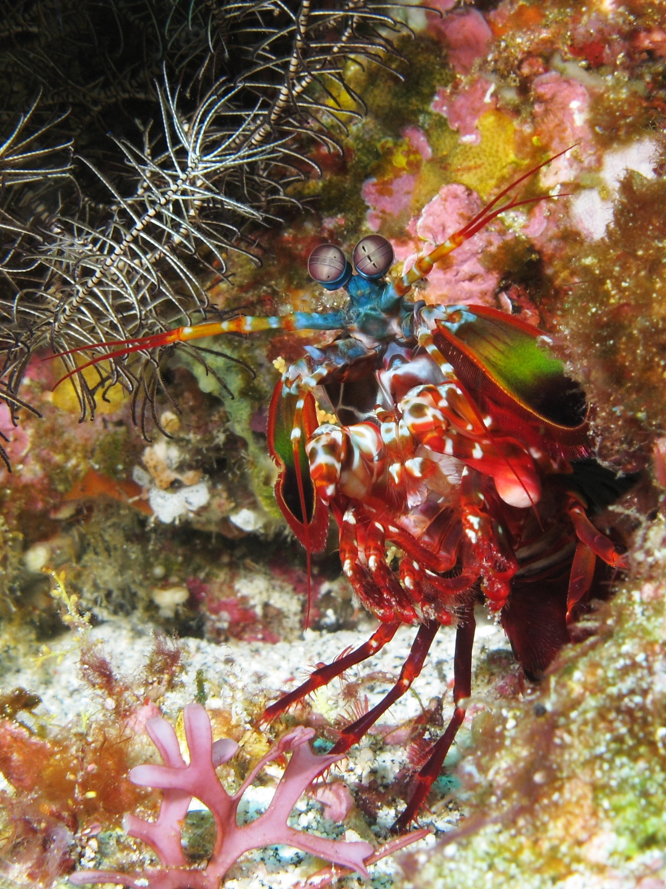

Fatos sobre o Stomatopoda
Conhecendo o Stomatopoda
Stomatopoda (ou estomatópode), cujo nome científico é Odontodactylus scyllarus chamados popularmente de tamarutacas ou de lacraias-do-mar no Brasil, caracteriza-se principalmente pela morfologia da segunda pata torácica, que lembra uma pata de louva-a-deus.
Soco de 80km/h
A pesar da aparência inofensiva, o Stomatopoda é um animal extremamente agressivo. Ele usa seus membros posteriores, que possuem formato parecido com as garras de um louva-deus, para atacar seus inimigos.
Seus membros ao atacar chegam à uma velocidade de 80km/h. Para se ter uma ideia, essa velocidade pode ser comparada à um tiro de um rifle calibre 22.
Suas presas recebem um golpe de 1500 Newtons de força.
Os seus membros se movem tão rápido que àgua eu sua volta pode ferver. Esse fonômeno tem o nome de Supercavitação.
Ele também usa as ondas de choque geradas pela velocidade dos seus golpes para desmaiar, e as vezes até matar, suas presas.
Muitas Cores
Nossos olhos possuem milhões de células sensíveis a luz, chamadas Cones.
Cones são o que nos possibilitam de ver as cores que conhecemos.
Nós humanos possuímos três tipos de cones: Verde, Vermelho e Azul. Ou seja, todas as cores que vemos são derivadas dessas três cores.
Cachorros só possuem dois tipos de cones: Verde e Azul. Por isso eles não conseguem enxergar as mesmas cores que nós vemos.
Borboletas possuem cinco tipos de cones: Verde, Vermelho, Azul e mais dois que nunca foram classificados porque nem conseguimos distinguí-los.
Imaginar a quantidade de novas cores que uma borboleta enxerga possuindo cinco cones já é uma coisa incrível. Mas mais incrivel é saber que o Stomatopoda possui dezesseis cones receptivos de cores. Imagine só a quantidade de combinações possíveis com todas essas cores.